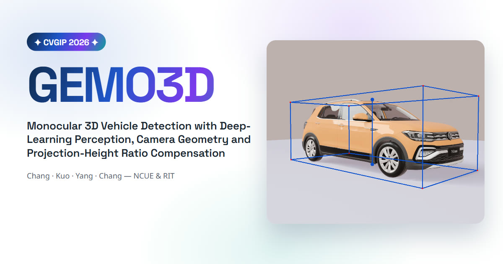

Watch videoGEMO3D: A Monocular 3D Vehicle Detection Method Integrating Deep Learning Perception, Camera Geometry, and Projection Height Ratio Compensation
An interpretable monocular 3D vehicle detection pipeline combining deep-learning perception, camera geometry, projection-height compensation, and road-plane constraints, evaluated in CARLA.